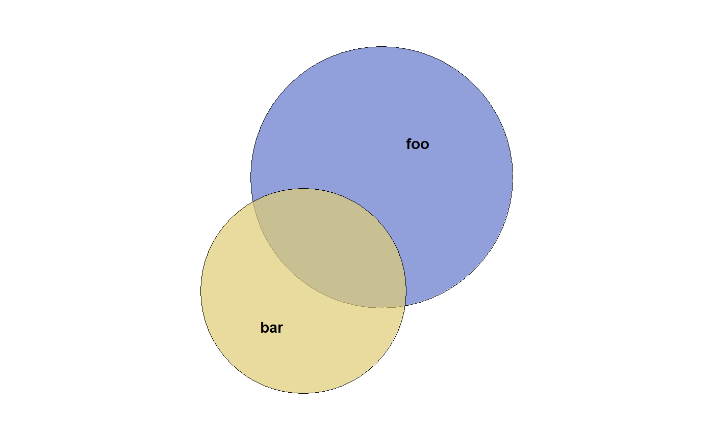
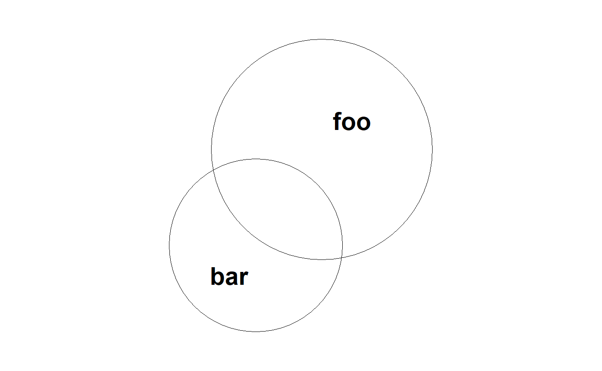

Plot Area-Proportional Euler Diagrams
Plot Euler diagrams with trellis graphics from lattice. This function
calls lattice::xyplot() under the hood, allowing plots of
both individual euler diagrams as well as grids of diagrams
in case the by argument was used in the call to euler().
# S3 method for euler plot(x, fill = qualpalr_pal, fill_alpha = 0.4, auto.key = FALSE, counts = FALSE, labels = is.logical(auto.key) && !isTRUE(auto.key), fontface = "bold", par.settings = list(), ..., default.prepanel = prepanel.euler, default.scales = list(draw = FALSE), panel = panel.euler, outer_strips, fill_opacity)
Arguments
| x | An object of class |
|---|---|
| fill | Fill color. Either a function that takes as its first argument the number of colors to generate, or a sequence of colors. |
| fill_alpha | Alpha for the fill. |
| auto.key | Plot a legend for the sets. |
| counts | Plot counts. |
| labels | A list or character vector of labels. |
| fontface | Fontface for the labels. (See |
| par.settings | Graphical parameters for trellis displays. See
|
| ... | Arguments to pass down to |
| default.prepanel | Default prepanel function. Should usually be left untouched. |
| default.scales | Default scales. Turns off |
| panel | The panel function. Should usually be left untouched. |
| outer_strips | Deprecated |
| fill_opacity | Deprecated |
Value
An object of class "trellis". The
update method can be used to
update components of the object and the
print method (usually called by
default) will plot it on an appropriate plotting device.
Details
Almost all of the relevant functionality for lattice::xyplot() is
available here. For instance, providing specifications to
par.settings will have an effect on many aspects of the plot. Moreover,
arguments that are given here will trickle down to the panel function
panel.euler() and subsequently to panel.euler.circles() and
panel.euler.labels(), which do the actual plotting.
The default value for fill causes, eulerr to choose color palettes
based on the number of sets, trying to provide palettes adapted to color
vision deficiencies based on qualpalr::qualpal().
See also
panel.euler.circles(), panel.euler.labels(),
lattice::xyplot(), grid::gpar(), grid::grid.circle(),
lattice::panel.xyplot(), euler(), qualpalr::qualpal()
Examples
# Customize colors, remove borders, bump alpha, color labels white plot(fit, fill_alpha = 0.5, fill = c("red", "steelblue4"), col = "white", border = "transparent", fontface = "bold.italic")# Add counts to the plot plot(fit, counts = TRUE)# Add a custom legend and retain counts plot(fit, counts = TRUE, auto.key = list(space = "bottom", columns = 2))# Plot without fills and distinguish sets with border types instead plot(fit, lty = c("solid", "dotted"), fill = "transparent", cex = 2, fontface = 2, labels = c("foo", "bar"))# Plot a grid of euler plots dat <- data.frame( A = sample(c(TRUE, FALSE), size = 100, replace = TRUE), B = sample(c(TRUE, TRUE, FALSE), size = 100, replace = TRUE), gender = sample(c("Men", "Women"), size = 100, replace = TRUE), nation = sample(c("Sweden", "Denmark"), size = 100, replace = TRUE) ) gridfit <- euler(dat[, 1:2], by = dat[, 3:4]) plot(gridfit, auto.key = TRUE)# We can modify the grid layout as well plot(gridfit, layout = c(1, 4))